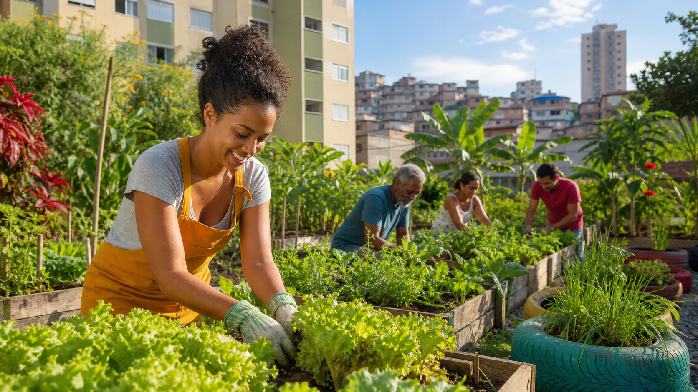

Oficinas de plantio
Encontros práticos sobre preparo do solo, escolha de mudas, irrigação e manutenção dos canteiros.

Comunidade, alimento e sustentabilidade
Um espaço informativo para incentivar hortas comunitárias, educação ambiental e participação dos moradores na transformação de áreas urbanas.
Participar do projetoSobre o projeto
A página Raízes Urbanas apresenta informações sobre hortas comunitárias, reaproveitamento de espaços e ações coletivas para tornar o bairro mais saudável. O conteúdo foi organizado para ser lido com facilidade em celulares, tablets e computadores.
O projeto utiliza HTML5 semântico para estruturar o conteúdo e CSS3 para criar uma identidade visual clara, com bom contraste, navegação direta e elementos interativos acessíveis.
Atividades
Cada atividade foi pensada para unir aprendizado, cuidado com o ambiente e colaboração entre moradores.
Encontros práticos sobre preparo do solo, escolha de mudas, irrigação e manutenção dos canteiros.
Orientações para transformar resíduos orgânicos em adubo e reduzir o descarte de lixo comum.
Momentos de limpeza, plantio e organização para manter a horta ativa e acolhedora.
Boas práticas
Contato
O formulário usa campos obrigatórios, tipos adequados de entrada e textos de apoio para facilitar o preenchimento por diferentes usuários.